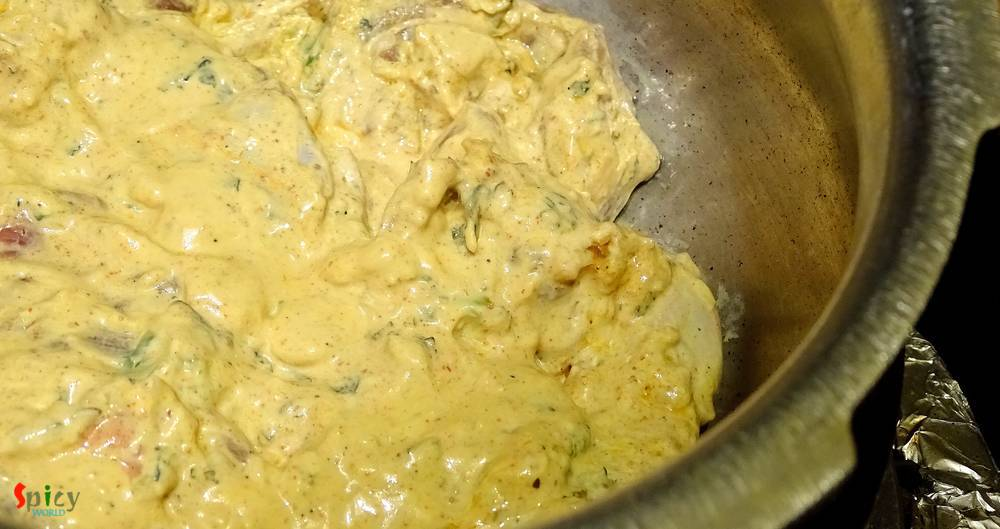

Simple and Easy Recipes
Chicken Dum Biriyani (Hyderabadi style)
© 2016 Spicy World, Published on: Feb 23, 2019
I guess you all, who follow my blog, already know that we have a 'thing' for Biriyani. Be it with chicken / mutton / prawn we are always ready to enjoy. I've already posted Kolkata style biriyani recipe which is much easier than Hyderabadi style as you need to have full confidence on timing and proportions. In Kolkata we make the chicken with gravy first and then give 'dum' with cooked rice, whereas, in this case you have to spread cooked rice over the marinated raw meat and then give it 'dum' until the meat becomes perfectly cooked and also remain juicy enough - it's not easy as it sounds. After several trials I have achieved my confidence on making this biriyani and it's my pleasure to share the recipe + details with you.
")
Ingredients
- 1 kg of medium sized chicken (with bone).
- 2 medium onion, thinly sliced and deep fried until golden.
- 2-3 Tablespoons of ginger and garlic paste.
- 4 Tablespoons of curd.
- 3 - 4 Tablespoons of biriyani masala.
- 3 Teaspoon of red chili powder.
- Salt as per your taste.
- 3 Tablespoons of oil (in which we have fried the onion).
- Whole spices (1 Teaspoon of black cumin seeds, 1 small cinnamon stick, 5 green cardamom, 6 cloves, 6 - 7 black peppercorns, 1 mace).
- 6 cups of long grain basmati rice.
- A handful of chopped mint and coriander leaves.
- 3 Tablespoons of saffron soaked milk.
- 3 Tablespoons of ghee / clarified butter.
- Water.
- Half Teaspoon of kewra water / rose water.
- 1 Teaspoon of black pepper powder.
")
")
Steps
Fry the sliced onion in half cup of oil till golden in color. Then keep it aside.
Put the chicken in a mixing bowl with yogurt, some salt, biriyani masala, red chili powder, black pepper powder, ginger and garlic paste.
Then add half of the fried onion, half of the mint coriander leaves and 3 Teaspoons of that oil in which you fried the onion.
Mix very well everything and keep it in the fridge for overnight.
Wash the rice well and soak it for 2-3 hours in water. Boil 8 cups of water in a big pot.
Put all of the whole spices in a cotton cloth, tie the ends and add it in the hot water along with 2 Teaspoons of white oil and 4 Tablespoons of salt.
Let the water boil with spices for 2 minutes.
Then add the soaked basmati rice. Cook until it become firm, not soft then immediately drain the water and remove that cloth. Cover the rice immediately with a lid.
Spread the marinated chicken in a heavy bottom pan.
Then spread the cooked rice all over the chicken.
Now spread the ghee, saffron soaked milk, remaining fried onion, mint and coriander leaves and the kewra / rose water all over the rice.
Cover the pan with a tight lid and put it on high flame for 5 minutes, then 20 minutes in low flame.
After almost 30 minutes turn off the heat. Do not open the lid right then.
Let it rest for another 10-15 minutes and then dig in.
Your chicken dum biriyani is ready.
Serve this hot with some raita or gravy.
 (Final)")